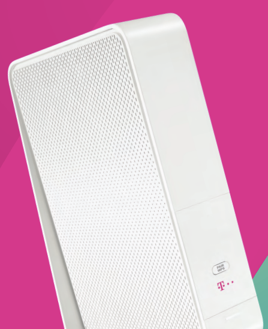

Hallo,
Habe leider noch keine Lösung für mein Problem gefunden.
Ich habe ein Programm mit dem ich vom PC eine Datei über das Handy (wlan) auf meine Garminuhr schicken kann/könnte
Jetzt gibt es in diesem Programm allerdings nur 3 IP Adressen mit denen das Funktioniert.
Mein Handy hat aber eine andere, darum geht es laut Garmin nicht da es dann nicht als selbes Netzwerk anerkannt wird obwohl es das gleiche Netzwerk ist.
Meine Frage:
Wie kann ich über das Modem dem Handy eine andere Wlan-IP vergeben?
Wenn ich das am Handy selber mach habe ich ja kein Internet mehr am Handy.
Bin leider gerade nicht Zuhause.
Habe das Standard Modem von Magenta für ehemalige UPC Kunden (Kabelinternet)
Hey
@scorpion1478
Ich denke mal du meinst diese Box, aber mit UPC Logo:

Du kannst zwar über das Modem dem Handy eine fixe IP-Adresse vergeben, aber nur wenn es sich um eine im Bereich 192.168.0.2 bis 192.168.0.254 handelt. Die Vergabe einer fixen IP-Adresse würde über die MAC Adresse der W-Lan Karte des Handys erfolgen. Viele Handys vergeben sich heutzutage zufällige MAC Adressen, welche sich laufend ändern. Dieses Verhalten kann in den W-Lan Einstellungen für das jeweilige W-Lan Netz deaktiviert werden.
Welche IP-Adressen würde die Software den unterstützen?
Gibt es in der Software tatsächlich keine Möglichkeit eine andere IP-Adresse einzutragen und um was für eine Software handelt es sich denn?
LG NTM
Ja ist genau so eine Box (habe sie mal im Austausch bekommen)
192.168.111.1
192.168.6.1
192.168.0.45
Die letzte würde Passen, das ist aber die IP vom LAN; mein PC usw.
aber wenn ich das jetzt richtig verstehe dann soll ich die Änderung am Handy machen und nicht über den Router?
und nicht die IP selber ändern, da ich dann ja kein Internet mehr habe, sondern nur die MAC Adresse?
Denn am Router habe ich zwar mein Handy gefunden und kann die IP einsehen aber nicht ändern.
EasyPwd Listener damit kann ich auf die Uhr ein XML File das mit KeePass2 erstellt worden ist schicken.
Login Daten und Passwörter usw.
Ich habe mir kurz dieses EasyPwd Listener angesehen.
Über die Option IP-Adresse wird festgelegt auf welcher IP-Adresse der PC auf Anfragen hören soll.
Also hat dein PC diese drei IP-Adressen.
Die 192.168.0.45 ist auf einer physischen Schnittstelle (Lan/W-Lan Karte) und die anderen beiden werden vielleicht interne Schnittstellen sein (Virtualisierungssoftware oder ähnliches).
Der Rest erfolgt dann in der Garmin Connect App oder auf der Uhr selbst. Dort musst du die IP-Adresse des PCs und den Port eingeben.
Ich habe keine Garmin Uhr also kann ich mir dies leider nicht genauer ansehen oder testen.
Es ist also grundsätzlich keine Konfiguration in den IP-Einstellungen oder am Modem nötig.
ja ich kann in der App die IP Adresse ändern, auf jede die ich will. Aber das Programm EasyPwd Listener
gibt nur drei vor die ich aussuchen kann. Dort kann ich keine IP eingeben nur anklicken.
Als ich die Anfrage im Garmin-Store gemacht habe wurde mir gesagt IP vom Programm
und die IP vom Handy müssen gleich sein.
Die Verbindung vom Handy zur Uhr auf dies APP funktioniert, wenn ich eine IP eingebe wird
zeitgleich die neue IP an der Uhr angezeigt, aber die Verbindung Vom Programm zum Handy geht nicht.
Antwort Garmin Store
"If Waiting Garmin device connections is always shown that means:
-both devices are not in the same network
- or some software is blocking connection in the pc
- or port is already used in the pc by another application"
Mehrere Ports versucht und auch extra für das Programm Ports freigegeben.
Firewall deaktiviert.
Alles dem Entwickler geschrieben und als Antwort kam wieder dass das Telefon die gleiche
IP haben muss wie im Programm angegeben. Das wäre bei mir vom Programm 192.168.0.45
aber das bekomme ich in dem Fall nicht auf dem Telefon hin?
Es gibt noch ein zweites Programm aber auch dieses gibt nur die drei IP-Adressen aus.
Wähle in EasyPwd Listener die betreffende Datei und IP-Adresse 192.168.0.45 aus (IP-Adresse deines PC im lokalen Netzwerk).
Klicke dann auf Export damit wartet der PC auf eine Anfrage von deinem Handy auf der IP-Adresse 192.168.0.45.
Das Telefon muss nur mit demselben Netzwerk verbunden sein. Die IP-Adresse des Handy muss nur im selben Subnet sein (darum kümmert sich der DHCP Server des Modem).
In der App gibst du die IP-Adresse des PC an (192.168.0.45) und den Port des Programms.
Danke für deine Mühe, aber ich schätze das wird ein Problem sein das ich nicht lösen kann.
Du schriebst mir was ich tun sollte, genau das habe ich ja bisher auch so gemacht und es funktioniert nicht.
Entwickler von der Garmin App schreibt mir das ich was anderes machen muss da über 200 Benutzer kein Problem damit haben.
Auch mit dem zweiten Programm gibt es kein Problem, bin der erste.
Er sieht das Problem immer an drei Punkten.
IP- Netzwerk muss gleich sein
Port darf nicht von einem anderen Programm gerade verwendet werden (habe rendom einige versucht kann mir nicht
vorstellen das alle gerade sonst auch verwendet worden sind)
Nichts darf das Programm blockieren, habe die Firewall einfach deaktiviert, somit müsste das ja auch erledigt sein.
Habe es auch mit dem Laptop versucht der so gut wie leer ist damit wirklich keine störenden
Programme im Weg sein könnten. Aber auch das ging nicht. Es kommt am Handy/Uhr keine Verbindung an.
Bearbeitet von scorpion1478Was ich heute noch gemacht habe.
Ping auf das Telefon. Hat funktionirt sind im selben netzwerk.
Windows defender aus.
Anti Virus aus.
Firewall vom Router aus.
Hat nicht funktioniert.
Programm hat alle freigaben.
Verwendeter port extra freigegen
usw. es geht leider nicht.
Leptop benutzt der nur windows und Amazon Prime oben hat sonst nix.
Geht leider auch nicht.
Anderes Telefon benutzt.